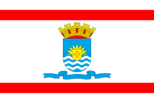
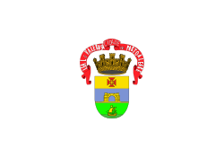
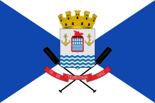

-
Aracaju
Sergipe
- Ano de Fundação: 1855
- População: 672 mil
- Posição por PIB: 22º
-
Belém
Pará
- Ano de Fundação: 1616
- População: 1,5 milhão
- Posição por PIB: 13º
-
Belo Horizonte
Minas Gerais
- Ano de Fundação: 1897
- População: 2,5 milhões
- Posição por PIB: 4º
-
Brasília

Distrito Federal
- Ano de Fundação: 1960
- População: 3,1 milhões
- Posição por PIB: 3º
-
Boa Vista
Roraima
- Ano de Fundação: 1890
- População: 436 mil
- Posição por PIB: 25º
-
Campo Grande
Mato Grosso do Sul
- Ano de Fundação: 1872
- População: 916 mil
- PIB: 14º
-
Cuiabá
Mato Grosso
- Ano de Fundação: 1719
- População: 623 mil
- PIB: 17º
-
Curitiba
Paraná
- Ano de Fundação: 1662
- População: 2 milhões
- PIB: 5º
-
Florianópolis

Santa Catarina
- Ano de Fundação: 1673
- População: 516 mil
- PIB: 19º
-
Fortaleza
Ceará
- Ano de Fundação: 1726
- População: 2,7 milhões
- PIB: 8º
-
Goiânia
Góias
- Ano de Fundação: 1933
- População: 1,55 milhões
- PIB: 11º
-
João Pessoa
Paraíba
- Ano de Fundação: 1585
- População: 825 mil
- PIB: 21º
-
Macapá
Amapá
- Ano de Fundação: 1758
- População: 522 mil
- PIB: 24º
-
Maceió
Alagoas
- Ano de Fundação: 1815
- População: 1 milhão
- PIB: 18º
-
Manaus
Amazonas
- Ano de Fundação: 1669
- População: 2,2 milhão
- PIB: 6º
-
Natal

Rio Grande do Norte
- Ano de Fundação: 1599
- População: 896 mil
- PIB: 16º
-
Palmas
Tocantis
- Ano de Fundação: 1989
- População: 313 mil
- PIB: 26º
-
Porto Alegre

Rio Grande do Sul
- Ano de Fundação: 1772
- População: 1,5 milhões
- PIB: 7º
-
Porto Velho
Rondônia
- Ano de Fundação: 1907
- População: 548 mil
- PIB: 23º
-
Recife
Pernambuco
- Ano de Fundação: 1537
- População: 1,6 milhões
- PIB: 10º
-
Rio Branco
Acre
- Ano de Fundação: 1882
- População: 419 mil
- PIB: 27º
-
Rio de Janeiro
Rio de Janeiro
- Ano de Fundação: 1565
- População: 6,7 milhões
- PIB: 2º
-
Salvador
Bahia
- Ano de Fundação: 1549
- População: 2,9 milhões
- PIB: 9º
-
São Luís
Maranhão
- Ano de Fundação: 1612
- População: 1,1 milhões
- PIB: 12º
-
São Paulo
São Paulo
- Ano de Fundação: 1554
- População: 12,3 milhões
- PIB: 1º
-
Teresina

Piauí
- Ano de Fundação: 1852
- População: 868 mil
- PIB: 20º
-
Vitória
Espírito Santo
- Ano de Fundação: 1551
- População: 369 mil
- PIB: 15º